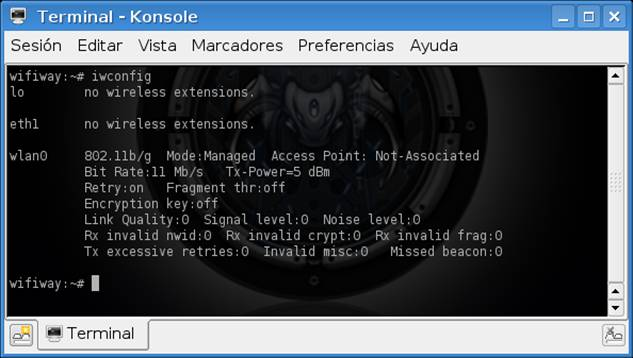
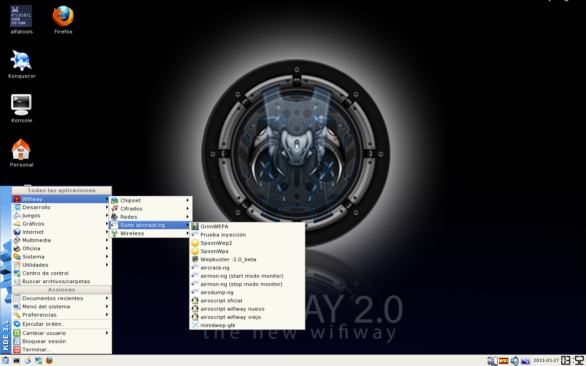

ARRANCANDO WIFIWAY
En esta sección veremos como se pone en marcha el wifiway. El ejemplo es del wifiway 1.0 pero es valido para el wifiway 2.0 ya que es más simple.
- Poco después de iniciar el sistema aparece la configuración de la zona horaria donde elegimos la que corresponda a nuestro país y pulsamos Enter.
- A continuación nos pregunta por nuestro sistema horario donde elegimos <Local time> y pulsamos Enter.
- Lo siguiente es seleccionar el idioma y tipo de teclado, escogemos el que
corresponda a nuestro país o región y nuestra distribución de teclas,
después pulsamos Enter.
- Aparece la caja de confirmación de las configuraciones, la verificamos y pulsamos Enter.
- Por último escribimos startx y pulsamos Enter.
-
- Ya tenemos Linux WifiWay 1.0 final corriendo.
Una vez iniciado Wifiway, abrimos en el icono que pone Konsole y tecleamos iwconfig, verificamos que nuestro adaptador esta subido. Quizá nos aparecerán varias. Nuestra tarjeta es la única que al lado no pone “No wireless extensions y tomamos nota de su nombre aquí seria wlan0

Si solo te aparece
lo no wireless extensions
No sigas ya que tu tarjeta no la reconoce Linux
También podría ser que no cargue automáticamente el chipset de tu tarjeta si es de zydas tendrías que conectarla después de que arranque Wifislax ó bien una vez arrancado desenchufarla y volver a conectar sino es zydas mirar en el menú Asistencia chipset haber si te viene el de tu tarjeta.
En la siguiente imagen podemos ver donde estan las utilidades con las que vamos a trabajar, aunque la imagen corresponde a wifiway 2.0 en la version anterior es parecido.
